Ethereum: The Infinite World Computer
October 19, 2025 · Ethereum, blockchain
Introduction
Ethereum is a deterministic unbounded state machine, consisting of a globally accessible singleton state and a virtual machine that applies changes to the state.
Ethereum purpose is not to be a currency, but ether are intended to be a utility currency to pay for the use of the world computer.
Many similarities with bitcoin’s blockchain, but the big innovation here is that Ethereum’s blockchain can be programmed, so can support any kind of application.
- Ethereum’s nodes, instead of only tracking the state of the currency ownership, they track general-purpose data that can expressed in the format of key-value tuple.
- Ethereum has a memory that store both code and data.
- Ethereum can load code into it’s state machine and run the code, storing the results (state changes) into the blockchain → state changes are governed by consensus rules.
- Ethereum code (smart contracts) unlike Bitcoin, is Turing Complete, it can compute any algorithm computed by any Turing Machine.
Turing complete systems can run infinite loops (see example on the right).
Smart contracts could have these kind of loop, and break the world computer → how we can prevent this?
Ethereum introduces the mechanism of gas. In a smart contract every code instruction has a predetermined gas cost.
So once the gas is consumed, the code stops running. Gas is paid with ether.
Any unused gas is refunded back to the sender of the tx.
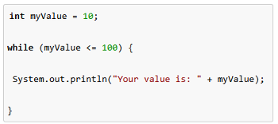
Get Started with Ethereum
Using a wallet
Ethereum’s utility currency is called ether (ETH). It can be divided into smaller units, the smallest possible unit is called wei.
1 ETH = 10¹⁸wei
In order to interact with the Ethereum ecosystem you need a wallet.
A wallet is a software that helps you manage your account by holding your keys and broadcasting your transactions.
Some of my favorite wallets are:
You can install both as your browser extension.
When you’ll create an account using for example MetaMask, it will ask you to generate a mnemonic backup consisting of 12 english words that you can use to recover access to your founds or to switch to another wallet.
In MetaMask you will have access to many different networks, among which some test network. Testnets are useful for learning of developing purposes, because every currency spent there has no real value.
So switch to the Sepolia test network in your MetaMask wallet (in a dropdown menu).
To load your wallet with some ETH, you can go on a faucet website, insert your wallet address and request some funds.
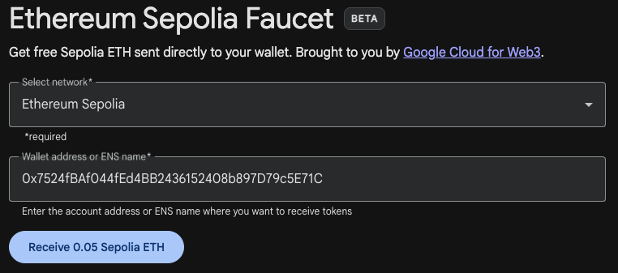
The Faucet website will elaborate a transaction to send you funds. All transaction are visible on a block explorer. The most famous one is Etherscan, while for Seoplia you can use this one.
Every transactions requires the payment of a fee, called gas, used to reward miners to validate the transaction.
The gas price is not stable changes every time depending on the network congestion.
E.g:
- Gas price 3 gwei (
10⁹wei) - A simple transaction requires 21000 gas units
- Total fee = 3*21000 = 63000 gwei
Ether is not merely a currency, it is used to pay for running smart contracts, which are programs that run on an emulated computer called Ethereum Virtual Machine (EVM).
Each node of the Ethereum network, has a local copy of the EVM to validate contracts execution, while the Ethereum blockchain records the changing state of this world computer as it processes smart contracts.
Wallets and Contracts
Wallet such as MetaMask that hold private keys, are called Externally Owned Account (EOA).
Another type of account exists called contract account. This account has a smart contract code which has some logic.
Contracts can send and receive funds like EOAs. But when a transaction (tx) destination is a contract address, it causes the contract to run in the EVM, using the tx and the tx data as input. Tx contain indeed data specifying which function of the contract to call (run).
Since contracts don’t have private keys, they cannot initiate a tx. Only an EOA can initiate a tx.
Simple Smart Contract
Ethereum has different high level languages to write contracts, the most common one is Solidity.
A contract code is then converted into EVM bytecode and executed.
Let’s write a faucet contract. It will have a function to withdraw some money (faucet sends money to who requests), and a function to receive money (users send money to contract).
The contract is commented to be understood.
// SPDX-License-Identifier: CC-BY-SA-4.0
// Version of Solidity compiler this program was written for
pragma solidity 0.8.30;
// this line specifyis that we are writing a contract. Like class in OOP languages
contract Faucet {
// A particular (defualt) function used to accept payments by anyone
// called fallback or default function
// is called it users triggers this contract without specifying any particular function
receive() external payable {}
// function users can use to withdraw some money
function withdraw(uint withdraw_amount) public {
// Make a check to lLimit withdrawal amount
require(withdraw_amount <= 100000000000000000);
// Send the amount to the address that requested it
payable(msg.sender).transfer(withdraw_amount);
}
}The msg object is one of the inputs that all conctacts can access. It represents the transaction that triggered the execution of this contract.
We cast the sender of the transaction as payable so that we can transfer money to him/her → payable(msg.sender).transfer(withdraw_amount)
There are some IDEs that come with a Solidity compiler, the most popular one being Remix.
In Remix you can navigate into the contracts folder and create a Faucet.sol Solidity file, and paste the contract.
Then on the compiler icon you can compile the code. In the ENVIRONMENT dropdown menu, you can choose “WalletConnection”, so it will automatically select the chain selected in your wallet → Sepolia.
In the Account box, you’ll see your wallet address.
After the contracts it’s compiled you can deploy by clicking on the button and by signing a tx.
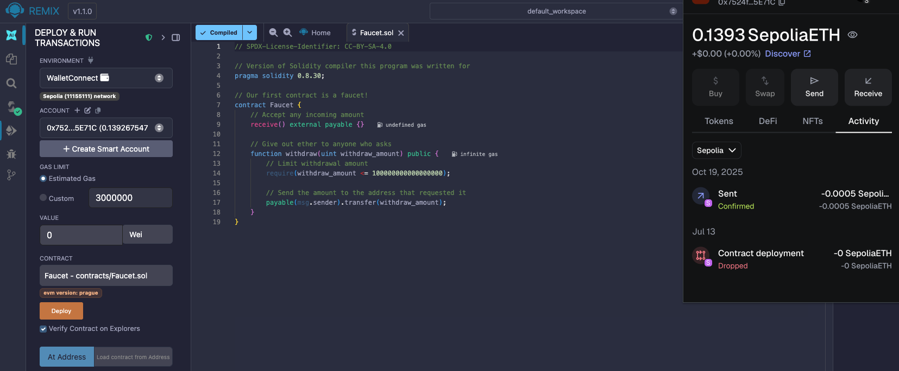
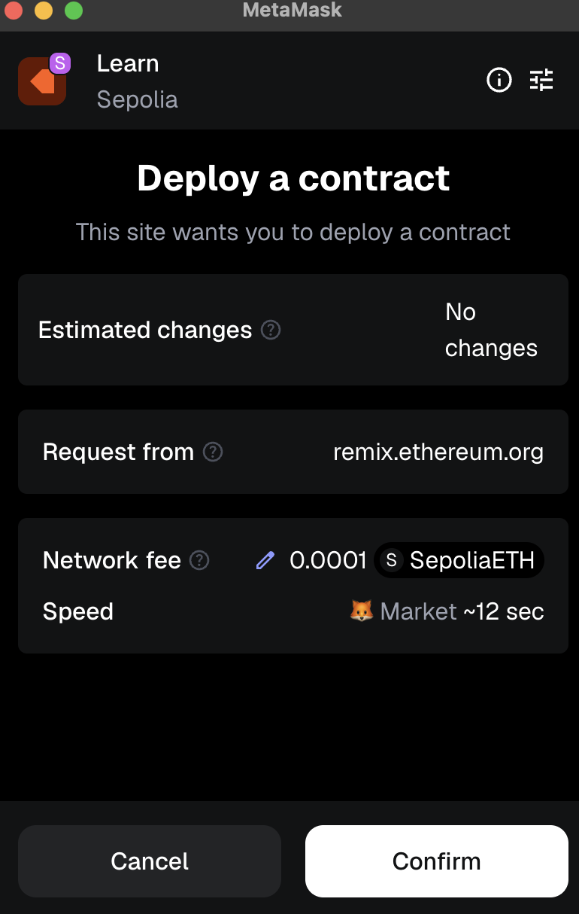
In Remix it will appear a section where you can visualise your contract address, and you can actually use it.
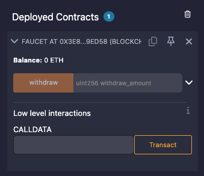
You can check your contract address on Etherscan, and see that has zero transactions, and zero balance, since nobody sent any money to this address yet.
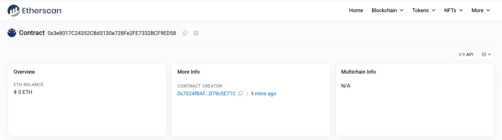
You can open MetaMask, and send money to the contract address as for any “normal” address.
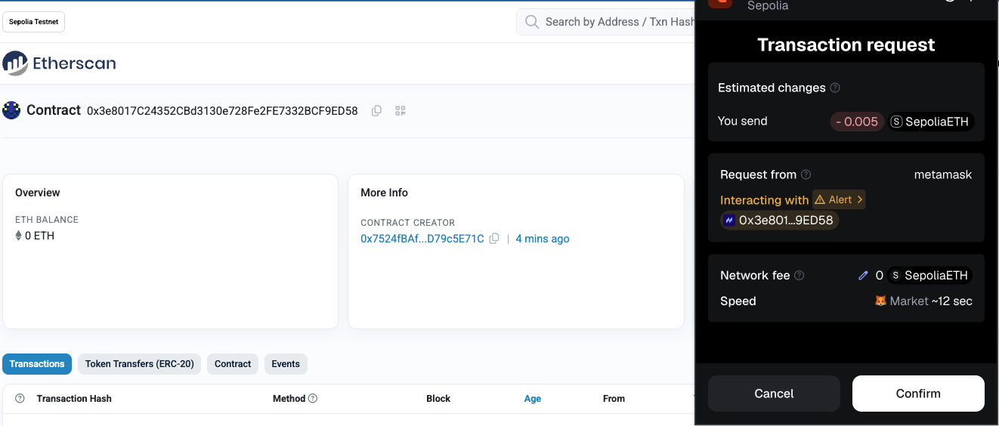
After few seconds you’ll see in Etherscan some positive balance and a transaction.
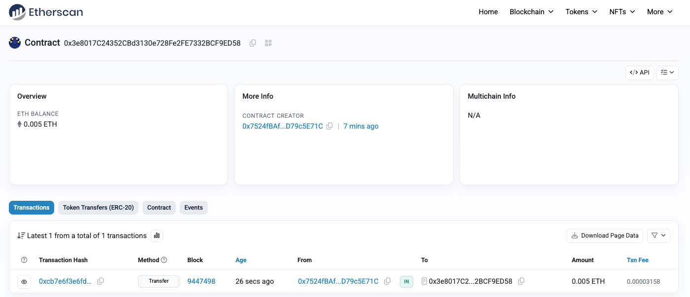
It is now time to test the withdraw functionality we built directly from Remix. Let’s withdraw some amount from our faucet.
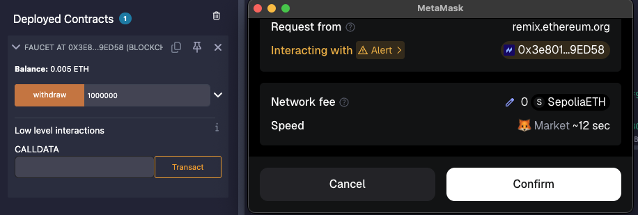
Now there are less money and another tx appeared in Etherscan.
Since the ethers have been sent from the contracts code, the new ts will appear under the “intenral transaction” tab.
You can see that the internal tx has a partent tx which is the tx that started from my wallet. Since this tx initiates the run of the smart contract that sends the money.
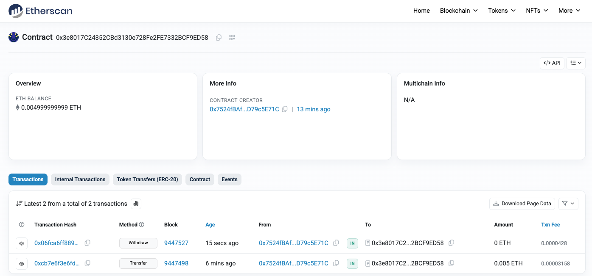
Ethereum Clients
Ethreum does not have a reference implementation like bitcoin with the Bitcoin Core, but it has a reference specification that anybody can implement.
Specifications are defined in the Yellow Paper.
📄 View PDFethereum.github.ioThis is why there are many implementatins of the Ethereum protocol in several programming langauges.
One of the most common ones is [Geth](/0798ec0a4c5743288d90f50d69e99385?pvs=25) from the Ethereum Foundation, which is based on the Go-lang. So anybody with enough resources can install a full-node locally and be part of the network.
In order to develop dApps, you don’t need a full node though you can use:
- A testnet node (smaller blockchain)
- Local private chain like Ganache
- Run a remote client, that does not store the entire blockchain, but connects to a full-nodes and provides some functionalities
- Usually remote client offers API (like web3.js API) in addition to the transaction functionality of normal wallets
- A remote client is also a mobile or browser wallet that only allows you to broadcast txs.
Geth (Go-Ethereum) implementation is here: https://github.com/ethereum/go-ethereum
If you install the full-node, you can use your node functionlities via JSON-RPC APIs.
Cryptography
One of Ethereum’s foundational technologies is cryptography. Is is important to note that in the communication of the Ethereum network, all data is uncrypted, this allows nodes to run verifications of transactions. Cryptography is instead use not to keep secrets but for other properties.
EOAs ownership of ether, is established via: private keys, Ethereum address and digital signatures.
A private key uniquely determines an Ethereum account.
In public key cryptography, key always come in pair (private and public) and are based on mathematical function that have a special property: are easy to calculate in one direction but hard to calculate the inverse.
🔑 🟢 —> Public Key : it’s like the bank number, you can share it → used to receive funds
🔑 🟠 —> Private Key: it’s like the PIN (password), to keep it private → used to sign transactions and spend funds
For example if we have to prime numbers, is easy to calculate their multiplication. But from a big number, is very difficult to say what prime numbers generated it → prime factorization problem
If I have the result 8.018.009 and a factor 2.003, it’s easy to finde the missin factor: 4.003
Functions like these, where knowing part of the secret makes the problem easy, are called trapdoor functions.
The private key is needed to produce the digital signature, requested to sign each transaction in order to spend funds.
Elliptic curve math, ensures that the digital signature is valid for a given transaction and a public key, without knowing the private key. So anyone can validate a signature without knowing the secret.
Elliptic Curve
A private key is simply a random number with 256 bit. Imagine fo tossing a coin 256 times and get the result as your key.
There are 2²⁵⁶ possible outcomes ≈ 10⁸⁰ → more or less one different key for each atom in the universe. So it is practically impossible that two users ends up with the same key.
The public key is generated from the private one using the elliptic curve multiplication: K = k * G
kis the pvt keyGconstant point called generator pointKis the pbl key
Given K, if you want to find k, you can only brute force, so its computationally hard, if these values are high, is basically impossible.

Ethereum uses a specific elliptic curve called secp256k1, which is defined by the following function:
y² mod(p)= (x³ +7) mod(p)
p is a prime number, and indicates that this curve is over a finite field. It’s like the clock, in that case p is 12, so instead of saying 23 we say 11pm
In our case p is 2²⁵⁶-2³²-2⁹-2⁸-2⁷-2⁶-2⁴-1 which is a very large number.
So a point on this curve is defined by 2 coordinates such as:
x-coordinate: 26557396834603496405429715671000649890342828193837296682021408587325818683135y-coordinate: 111966831483317698639766129155297399177101885252094551915029716042625069463573
so these two numbers are a solution of the equation
Some basic properties of the elliptic curve:
- The addition on P1 and P2 gives P3 on the elliptic curve as the image above.
- the + is associative
- if P1 = P2, we draw the tangent and intersect the point P3 in this way
- There is a special point called “point at infinity” so that:
- if P1 is point at infinity → P1 + P2 = P2
- for a point P on the curve, and a number k, k*P = P + P + P …. (k times). k sometimes is called the “exponent”
How to generate a public key?
Given a random private key, which is a random number, curve, we multiply it for a given fixed G, the generator point and a point on the curve, to produce another point on the curve K , the pbl key.
Since G is always the same, whoever posses k can generate K.
k*G is like summing G to itself k times.
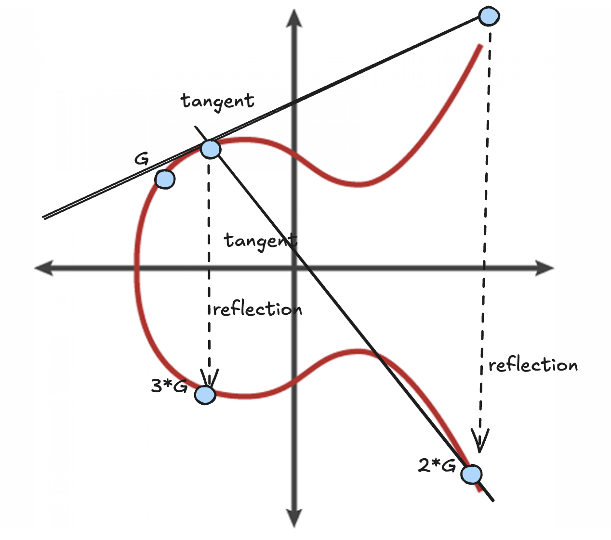
An Ethereum uncompressed public key has the format :04 + x-coordinate + y-coordinate .
Hash Functions
Cryptographic hash functions are heavily used in Ethereum.
An hash function maps an input of arbitrary size into a fixed length output (the output looks random).
- The function are one way, it is difficult to recreate the input given the output.
- By slightly changing the input the output changes completely
- Its a many to one function → finding 2 input that generate the same output is called hash collision
- In a good hash function, collision are rare.
Ethereum uses the Keccak-256 hash function.
The term Keccak-256 is frequently and incorrectly referred to as SHA-3 in Ethereum code, documentation, and other resources.
Ethereum Proposal #59 reflects a community effort to address and correct this terminology.
Ethereum addresses are derived from public keys that are encrypted with keccak-256, and where the last 20 bytes are kept.
Often addresses start with 0x to indicate that are hexadecimal encoded.
Wallets
A wallet is a software that serves as an interface to Ethereum. A wallet can manage your keys, so give you access to your funds stored on the blockchain, and allow you to create and sign transactions.
When designing a wallet you should find a balance between convenience and privacy:
- having a single key and a single address for everything is very convenient, but it’s easy to track your movements
- having a different set of keys for each tx can preserve your privacy a lot, but its not convenient
There are two types of wallet:
- Nondeterminist wallets: where each key is independently generated from a different random number
- Determinist wallets: a master key (or seed) is used to generate all of the other keys,
- to make them more secure, the seed is encoded in mnemonic words
- The keys are derived in a tree structure using the Hierarchical Deterministic Wallets method. This is useful to have part of the trees that are used for different scopes. For example some keys are assigned only to certain departments in a company.
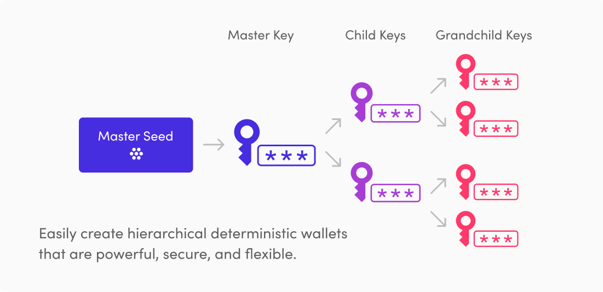
Transactions
Transactions are signed messages originated by an externally owned account, transmitted by the Ethereum network, and recorded on the Ethereum blockchain.
Transactions are the only things that can change the state in the EVM.
A transaction is a serialised message containing:
- Nonce
- Gas Price
- Gas Limit
- Recipient (to)
- Data
- v,r,s (digital signature)
Note that there is no “from” field, since the originator EOA can be recovered from the digital signature.,
Why each transaction needs a nonce and what is it? From the yellow paper:
Some scenarios example when a nonce is needed:
- You send 2 transactions. You just realised after sending the transactions, that you don’t have enough ether for both, so you would like the protocol to reject the second one because obviously you prioritise the first one. But the network doesn’t know which one is the first or second one because the transactions come in a “random” order to the nodes. Here a nonce solves the situation.
- Imagine you send a transaction of 10 eth to buy your knew playstation-5. What if some node replays the transaction by resending it multiple times to the network? He could do this and you will spend 10 eth over and over again. But if in the transaction there is a nonce we know that a particular transaction has already been included in the chain, and new transactions will need new nonces which will affect the transaction hash.
The Ethereum network processes transactions sequentially, meaning that if you send a tx with nonce 0 and then a tx with nonce 2, the second transaction will not be included in any block but it will wait in a mempool until a tx with nonce 1 is received.
The gas price is the price that the transaction originator is willing to pay for a gas unit. Different kind of transaction require a different amount of gas unit (e. g a simple EOA to EOA tx requires 21k units). Gas price can change based on the state of the network, so it can be only estimated averaging the gar price of the latest blocks.
The gas limit instead, is the maximum number of gas units a transaction originator is willing to buy in order to complete the transaction. When you send a tx to run a smart contract, maybe this smart contract has an internal loop which requires a lot of gas, and you set a limit to not exceed.
A tx Recipient (to) can be an EOA or a contract.
The main payload of a transaction is contained in two fields: value and data.
You can have both of them or only one. For instance a tx with only the value is a simple payment.
If the destination address is a contract, the EVM will execute the contract code by running the contact’s function specified in the transaction, with the arguments also specified in the transaction.
Indeed the data field contains a serialised field representing the:
- function selector
- function arguments
There is a special transaction which is used for creating a new contract. In this case the destination address is the zero address (0x0) → we send the ABI code of the contract we wrote (you can compile with remix). See example below.
faucet_code = "0x6080604052348015600e575f5ffd5b506101328061001c5f395ff3fe608060405260043610601e575f3560e01c80632e1a7d4d146028576024565b36602457005b5f5ffd5b3480156032575f5ffd5b50604960048036038101906045919060d6565b604b565b005b67016345785d8a0000811115605e575f5ffd5b3373ffffffffffffffffffffffffffffffffffffffff166108fc8290811502906040515f60405180830381858888f1935050505015801560a0573d5f5f3e3d5ffd5b5050565b5f5ffd5b5f819050919050565b60b88160a8565b811460c1575f5ffd5b50565b5f8135905060d08160b1565b92915050565b5f6020828403121560e85760e760a4565b5b5f60f38482850160c4565b9150509291505056fea2646970667358221220a82768799e4269ac8e8c111092081a43e0d3442080df0f7d0ea0b2b57eb9681064736f6c634300081e0033"
web3.eth.sendTransaction({
from: '0x7524fBAf044fEd4BB2436152408b897D79c5E71C',
to: '0',
data: faucet_code,
gas: 2000000,
gasPrice: 1000000000,
});Digital Singnatures
A digital signature is a mathematical scheme for presenting the authenticity of digital messages or documents. A valid digital signature gives a recipient a reason to believe that the message was created by a known sender (authentication), that the sender cannot deny having sent the message (non-repudiation), and that the message was not altered in transit (integrity). [Wikipedia]
The digital signature algorithm used by Ethereum is called “Elliptic Curve Digital Signature Algorithm” or ECDSA.
The signature is a function that takes as argument the hash of the message and the signer private key.
Sig = F_sig(F_keccak256(m),k)
The signature is composed of two values : Sig = (r,s).
To verify the signature instead we need:
- the signature (r,s)
- the message (m)
- the signer public Key (K)
The verification returns true, if the signature is valid.
For a demonstration of why this works check it this article.
EIP-155: Simple replay attack protection
The EIP-155, is a standard to include in a transaction the chain-id.
When we sign and broadcast a chain, nothing stops an attacker to copy the transaction and reuse it into another blockchain. That’s why also an identifier is needed, so we know in which chain the tx is valid, and thanks to the nonce if it has been already used.
Some identifiers are shown in the table:
| CHAIN_ID | Chain(s) |
| 1 | Ethereum mainnet |
| 2 | Morden (disused), Expanse mainnet |
| 3 | Ropsten |
| 4 | Rinkeby |
| 5 | Goerli |
| 42 | Kovan |
| 1337 | Geth private chains (default) |
Transaction propagation
Ethereum is a peer-to-peer (P2P) network, where each nodes propagates information to its neighbors, until the information, in our case the transaction are spread over the entire network. Each Ethereum node is connected to at least 13 other nodes, making the graph sufficiently robust and connected
Even if in p2p, all the nodes are equal, some of them can have the special role of being validators, so they have the capacity to include transactions into linked blocks → blockchain.
Smart Contracts and Solidity
Smart contracts are typically written in high level languages, the most known one being Solidity.
A contract written in solidity must be compiled to the low level bytecode to be run in the EVM.
Contracts only run if they are called by a transaction (generated by an EOA or another contract) → there’s no such thing of a contract running in background.
Transactions are atomic, if a transaction fails, the change in state are rolled back as if the transaction never run → the failed tx is still recorded.
A contract can be deleted only if the contract logic allows so. There is an opcode called SELFDESTRUCT, that can be used in Solidy, and allows the contract to be delete. If the functionality is not included the contract will be there an usable forever.
The main “product” in the Solidy project is the compiler solc, which converts programs in EVM bytecodes.
To install Solidity refer to the documentation → Installing the Solidity Compiler — Solidity 0.8.31-develop documentation
The project also manages the Application Binary Interface or ABI. The ABI defines how data structures and functions are accessed in machine code.
In Ethereum, the ABI is used to encode contract calls for the EVM and to read data out of transactions. The purpose of an ABI is to define the functions on the contract that can be invoked and describe how each function will accept arguments and return its results.
Using the ABI a DApp such as wallet, will know how to construct a transaction to call a function of a contract we deployed on Ethereum.
A Solidity contract starts with the pragma, which is useful for the compiler to understand which version of the Solidity language was used to write the contract. pragma solidity ^0.8.26;
The main resource to learn more about Solidity is the official documentation → Introduction to Smart Contracts — Solidity 0.8.30 documentation
A contract by default has access to a some global objects including: block, msg and tx.
If we want to know the address of the tx that is invoking the contract we can use msg.sender
The principal data structure of a contract is contract which acts like a class in a OOP language.
But we can also use the interface , to only declare the functions we intend to implement in a contract that inherits the interface, and the library which is a contract meant to be used by other contracts.
Functions
Functions defined in a contract can be called via transactions. A function is defined by:
- A
function name. The only function with no name is the fallback function parameters- arguments names and types to be passed to the function when called
visibility(who can run the functions?)public: can be called by other contracts or EOA tx, or from within contractexternal: like public, but cannot be called within the contractinternal: Only accessible within the contract and by derived contractsprivate: like internal, but cannot be called by derived contractsbehaviourview: a function that promises to not modify any statepure: neither reads nor writes any variables in storagepayable: can accept incoming payments.
function FunctionName([parameters]) {public|private|internal|external} [pure|constant|view|payable] [modifiers] [returns (return types)]Constructor
This is a special function called only once when the contract is created. This function is defined by the keyword constructor() with no name.
pragma ^0.4.22
contract MyContract{
constructor(){
// this is the constructor
}
}A contract can be also deleted with a special Solidity command: selfdestruct(address recipient) → we need to specify the address of who is going to receive the balance still present in the contract.
We probably want only the contract owner to be able to delete the contract. We can then use the constructor to identify the owner address, and then add a check using require to the destroy functionality.
Since the constructor is called when the contract is created, we are sure the msg.sender contains the address of the contract creator.
pragma ^0.4.22
contract owned {
address owner;
constructor() {
owner = msg.sender;
}
function destroy() public {
require(msg.sender == owner);
selfdestruct(owner);
}
}Inheritance, Modifiers and Events
Contracts can inherit from other contract using the is keyword.
contract Child is Parent {
....
} In this case the child contract will inherit all the functionality of the parent. This is useful to modularise our code.
We can have basic generic functionality defined in a contract and then have children contracts more specific.
Function modifiers allows us to use very handy design patterns.
A modifier enable us to change the behaviour of other functions, for example for access control.
The following modifier always checks if the caller is the contract owner. The _; is a placeholder for the real function code.
modifier onlyOwner {
require(msg.sender == owner);
_;
}When a transaction completes, it produces a transaction receipt, which contains log entries that provide info about the actions occurred during the execution of the tx.
Events are Solodity objects that are used to construct these logs.
Events are used by DApps to watch specific events and change the app interface.
First we define an event and the we emit it.
event Withdrawal(address indexed to, uint amount);
...
emit Withdrawal(msg.sender, msg.value);Let’s see a complete example of our Faucet.sol with using the inheritance, modifiers and events.
pragma ^0.4.22
contract owned {
address owner;
constructor() {
owner = msg.sender;
}
modifier onlyOwner {
require(msg.sender == owner);
_;
}
}
contract mortal is owned {
function destroy() public onlyOwner {
selfdestruct(owner);
}
}
contract Faucet is mortal {
event Withdrawal(address indexed to, uint amount);
event Deposit(address indexed from, uint amount);
function withdraw(uint withdraw_amount) public {
require(withdraw_amount <= 0.1 ether);
require(this.balance >= withdraw_amount, "Insufficient balance in faucet for wthdrawal request");
msg.sender.transfer(withdraw_amount);
}
function() public payable {
emit Deposit(msg.sender, msg.value);
}Tokens
Fungibility
Tokens are blockchain-based abstraction that can be owned and can represent a currency or even a digital/physical asset.
Many blockchain serve multiple tokens that can be treated among them and even with other currencies creating a real market.
Tokens can be programmed to serve different functions also simultaneously_ voting rights, access/ownership to resource, currency.
Tokens are called fungible when one unit of a token can be treated with one unit of another dollar. For example dollars are fungible because if two people swap 1$, they’re are not richer or poorer.
If on my dollar bill, I have a text saying “this dollar bill can be used to redeem a Ferrari”, at this point the dollar has a value that goes beyond the 1$ and cannot be exchanged with any other dollar bill. Tokens that work like this dollar bill are called not-fungible.
Some tokens represent digital items that are intrinsic in the blockchain. This means that tokens that represent intrinsic assets do not carry counterparty risks. If you hold the keys you hold the item, e.g a cryptokitty.
When a token represents an item that is not on the blockchain, for example a physical item, you suffer of counterparty risk. You might own a token demonstrate your ownership of a Ferrari, but the ferrari is physically parked in a garage, so you need to trust that the garage custodian will actually give you the car because you have the token.
Utility or Equity
The majority of web3 projects uses tokens in two ways: either utility tokens or equity tokens.
Utility tokens are needed for the project to be usable, they can garantee access to resources or services.
Equity tokens only represent ownership of something, such as equity in a startup.
Tokens are a great fundraising mechanism for startups, but the this practice is regulated in many jurisdiction. Startups then hope to get around by issuing utility tokens and still raise money, but this is risky.
ERC20 Token Standard
ERC stands from Ethereum Request for Comments, GitHub issues where people discuss new tech and standards.
This GitHub issue was the number #20 that’s why we today talk about ERC-20 → ERC-20 Token Standard | ethereum.org
ERC-20 is a standard that defines the interface to implement fungible tokens.
The interface consists in several functions and event signatures (or prototypes) that developer should implement. These are:
- totalSupplay: returns total units of token that exist
- *balanceOf:** *returns balance of an address
- transfer: transfer x tokens to address
- transferFrom: transfer x tokens from a given account to another (to be used with approve)
- approve: authorizes an addrsess to execute several transfers up to a certain amount
- allowance: returns the remaining amount that the spender is approved to withdraw from the owner
- *Transfer** (event): *event triggered upon successful transfer
- *Approval** (event): *event triggered upon successful approve
How does the ERC20 intefrace is defined in solidity?
// SPDX-License-Identifier: MIT
pragma solidity ^0.8.0;
interface IERC20 {
/**
* @dev Returns the number of decimals the token uses - e.g. 8, means to divide the token amount
* by 100000000 to get its user representation.
*/
function decimals() external view returns (uint8);
/**
* @dev Returns the name of the token.
*/
function name() external view returns (string memory);
/**
* @dev Returns the symbol of the token.
*/
function symbol() external view returns (string memory);
/**
* @dev Returns the amount of tokens in existence.
*/
function totalSupply() external view returns (uint256);
/**
* @dev Returns the amount of tokens owned by `account`.
*/
function balanceOf(address account) external view returns (uint256);
/**
* @dev Moves `amount` tokens from the caller's account to `to`.
*
* Returns a boolean value indicating whether the operation succeeded.
*
* Emits a {Transfer} event.
*/
function transfer(address to, uint256 amount) external returns (bool);
/**
* @dev Returns the remaining number of tokens that `spender` will be
* allowed to spend on behalf of `owner` through {transferFrom}. This is
* zero by default.
*
* This value changes when {approve} or {transferFrom} are called.
*/
function allowance(address owner, address spender) external view returns (uint256);
/**
* @dev Sets `amount` as the allowance of `spender` over the caller's tokens.
*
* Returns a boolean value indicating whether the operation succeeded.
*
* Emits an {Approval} event.
*/
function approve(address spender, uint256 amount) external returns (bool);
/**
* @dev Moves `amount` tokens from `from` to `to` using the
* allowance mechanism. `amount` is then deducted from the caller's
* allowance.
*
* Returns a boolean value indicating whether the operation succeeded.
*
* Emits a {Transfer} event.
*/
function transferFrom(
address from,
address to,
uint256 amount
) external returns (bool);
// Events
/**
* @dev Emitted when `value` tokens are moved from one account (`from`) to
* another (`to`).
*
* Note that `value` may be zero.
*/
event Transfer(address indexed from, address indexed to, uint256 value);
/**
* @dev Emitted when the allowance of a `spender` for an `owner` is set by
* a call to {approve}. `value` is the new allowance.
*/
event Approval(address indexed owner, address indexed spender, uint256 value);
}The data structures contained in an ERC-20 implementation are only two, both defined using a data mapping:
- One to track balances for each owner
mapping(address ⇒ uint256) balances;- One to map allowances (an owner of a token can delegate the authority to a spender)
mapping(address ⇒ mapping ( address ⇒ uint256)) public allowed;
The approve + transferFrom workflow allows a token owner to delegate control of tokens to another address. This is useful for example for a company to sell tokens for an ICO (initial coin offering, similar to IPO).
Example ICO:
- Alice wants to allow the AliceICO contract to sell 50% of all the AliceCoin tokens to buyers like Bob and Charlie.
- Alice launches the AliceCoin ERC20 contract, issuing all the AliceCoin to her own address.
- Then Alice launches the AliceICO contract that can sell tokens for ether.
- Alice instantiates the approve & transferFrom workflow
- Alice sends a tx to the AliceCoin contract, calling approve with the address of AliceICO contract and 50% of the totalSupply
- This will trigger the Approval Event
- Now Alice ICO contract can sell AliceCoin
- When AliceICO contract receives ether from Bob, it needs to send some AliceCoin to Bob in return
- Within the AliceICO contract, there is an exchange rate between AliceCoin and ether.
- When AliceICO contract calls the AliceCoin tranferFrom function, it sets Alice’s address as the sender and Bob as the recipient.
- AliceCoin contract transfers the balance from Alice to Bob and triggers a Transfer event
- AliceICO can call the transferFrom an unlimited number of times, as long as it doesn’t exceed the approval limit Alice set.
- The AliceICO contract can keep track of how many AliceTokens it can sell by calling the allowance function
ERC-20 secure implementations: ERC-20
ERC721 Non-fungible Token
ERC-721 Non-Fungible Token Standard | ethereum.orgethereum.org
Non-fungible tokens track ownership of a unique thing. The thing owned can be a digital item, such as game items, or physical items like ownership of a house.
To understand the difference between the ERC20 and ERC721, you can take a look of the data structure used, which is:
mapping ( uint256 ⇒ address ) private deedOwner;
The ERC20 tracks balances that belong to owners, where the owner is the primary key. The ERC721 track each each deed ID (unique token ID), and who owns it, with the deed ID beign the primary key.
The ERC721 Solidity interface looks like this 👇🏻
// SPDX-License-Identifier: MIT
pragma solidity ^0.8.0;
interface IERC721 {
/**
* @dev Emitted when `tokenId` token is transferred from `from` to `to`.
*/
event Transfer(address indexed from, address indexed to, uint256 indexed tokenId);
/**
* @dev Emitted when `owner` enables `approved` to manage the `tokenId` token.
*/
event Approval(address indexed owner, address indexed approved, uint256 indexed tokenId);
/**
* @dev Emitted when `owner` enables or disables (`approved`) `operator` to manage all of its assets.
*/
event ApprovalForAll(address indexed owner, address indexed operator, bool approved);
/**
* @dev Returns the number of tokens in `owner`'s account.
*/
function balanceOf(address owner) external view returns (uint256 balance);
/**
* @dev Returns the owner of the `tokenId` token.
*
* Requirements:
* - `tokenId` must exist.
*/
function ownerOf(uint256 tokenId) external view returns (address owner);
/**
* @dev Safely transfers `tokenId` token from `from` to `to`.
*
* Requirements:
* - `from` cannot be the zero address.
* - `to` cannot be the zero address.
* - `tokenId` token must exist and be owned by `from`.
* - If `to` refers to a smart contract, it must implement {IERC721Receiver-onERC721Received}.
*/
function safeTransferFrom(
address from,
address to,
uint256 tokenId
) external;
/**
* @dev Safely transfers `tokenId` token from `from` to `to` with additional data.
*/
function safeTransferFrom(
address from,
address to,
uint256 tokenId,
bytes calldata data
) external;
/**
* @dev Transfers `tokenId` from `from` to `to`.
*
* WARNING: Usage of this method is discouraged, use {safeTransferFrom} whenever possible.
*/
function transferFrom(
address from,
address to,
uint256 tokenId
) external;
/**
* @dev Gives permission to `to` to transfer `tokenId` token to another account.
*/
function approve(address to, uint256 tokenId) external;
/**
* @dev Returns the account approved for `tokenId` token.
*/
function getApproved(uint256 tokenId) external view returns (address operator);
/**
* @dev Approve or remove `operator` as an operator for the caller.
*/
function setApprovalForAll(address operator, bool approved) external;
/**
* @dev Returns if the `operator` is allowed to manage all of the assets of `owner`.
*/
function isApprovedForAll(address owner, address operator) external view returns (bool);
}Oracles
Oracles are essentially, systems that can provide external data sources to smart contracts. Oracles provide a trustless (or near-trustless) way of getting extrinsic data (in the real world), such as the results of football games, on chain. They bridge the gap between the off-chain world and the smart contracts.
Some data that might be provided by an oracle could be: random numbers, exchange rate, capital markets, weather data, sporting event etc.
The common design pattern of an oracle is the following:
- collect data from an off-chain source
- transfer data on-chain with a signed message
- make the data available by putting it in a smart contract’s storage
Once data is in a smart contract it can be retrieved by others.
There are mainly 3 types of oracles:
- immediate-read: when the data is needed for an immediate decision: “is this person over 18 yo?”. The lookup is done when the info is needed and never again. This type of oracle store data once in its contract storage. A university might set up an oracle for the certificates of academic achievement of past students.
- publish-subscribe: oracle that provide broadcast services for data that is expected to change. When the oracle is updated with new information it flags signals to those who are considered “subscribed”. Interested parties should listen for updates. Examples are: price feeds, weather info, social statistic, traffic data etc.
- request-response: this is where the data space is too huge to be stored in a smart contract, and users only need a small part of it. Such systems have off-chain infrastructure. In this pattern usually an EOA transact with a decentralised application, resulting in an interaction with a function defined in the oracle smart contract. This function initiates the request to the oracle, with the associated arguments detailing the data requested. Once the tx has been validated, the oracle request can be observed as an EVM event emitted by the oracle contract, or as a state change; the arguments can be retreived and used to perform the actual query of the off-chain data source. Finally, the resulting data is signed by the oracle owner, attesting to the validity of the data at a given time, and delivered in a transaction to the decentralised application that made the request.
How we can trust off-chain methods? There is the possibility that data as been tampered with in transit.
Two common approaches to validate data integrity are: authenticity proofs and trusted execution environments (TEE)
Authenticity proofs, are cryptographic guarantees that data has not been tampered with, By verifying the authenticity proof on-chain, smart contracts are able to verify the integrity of the data before operating upon it.
TEE oracles instead (such as Town Crier), utilize hardware-based secure enclaves to ensure data integrity.
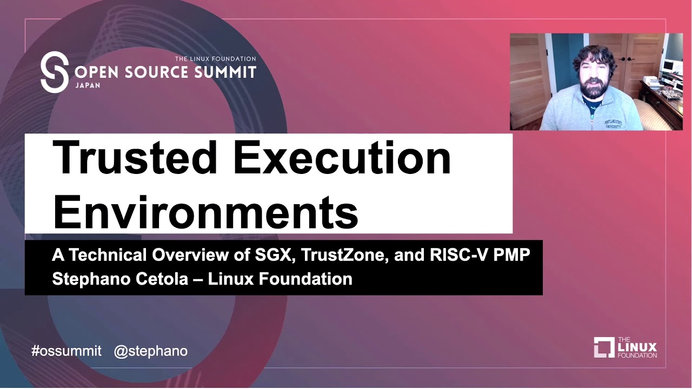
Oracles can bes used also to perform computation, not only data storage.
You can trust a centralised but auditable service like Oraclize, that provide a service for decentralised applications that requested a particular computation.
Otherwise you can use a more decentralised alternative like TrueBit. They use a system of solvers and verifiers who are incentivized to perform computations and verification of those computations, respectively.
In effect, TrueBit is an implementation of a computation market, allowing decentralised applications to pay for verifiable computation to be performed outside of the network, but relying on Ethereum to enforce the rules of the verification game. In theory, this enables trustless smart contract to securely perform any computation task.
A broad range of application exist like True bit (e.g for machine learning).
This Solidity smart contract, called ETHUSDPriceConsumer, uses Chainlink's decentralized price feed to securely retrieve the latest ETH/USD exchange rate directly on-chain without needing requests or callbacks. It provides simple view functions to access the current price (with 8 decimals) and the feed's decimals, making it easy for other contracts or users to query real-time pricing data efficiently.
// SPDX-License-Identifier: MIT
pragma solidity ^0.8.7;
import "@chainlink/contracts/src/v0.8/interfaces/AggregatorV3Interface.sol";
/**
* Simple contract to read the latest ETH/USD price from Chainlink.
* Example uses Ethereum Mainnet address (as of 2025).
* For testnets, use the appropriate feed address from:
* https://docs.chain.link/data-feeds/price-feeds/addresses
*/
contract ETHUSDPriceConsumer {
AggregatorV3Interface internal priceFeed;
/**
* Network: Ethereum Mainnet
* Aggregator: ETH/USD
* Address: 0x5f4eC3Df9cbd43714FE2740f5E3616155c5b8419
*/
constructor() {
priceFeed = AggregatorV3Interface(0x5f4eC3Df9cbd43714FE2740f5E3616155c5b8419);
}
/**
* Returns the latest price as int256 (e.g., 250000000000 means $2500.00).
* Price has 8 decimals.
*/
function getLatestPrice() public view returns (int256) {
(
, // roundId (ignored)
int256 price,
, // startedAt (ignored)
, // timeStamp (ignored)
// answeredInRound (ignored)
) = priceFeed.latestRoundData();
return price; // Typically positive; add checks in production if needed
}
/**
* Optional: Helper to get decimals (always 8 for this feed).
*/
function getDecimals() public view returns (uint8) {
return priceFeed.decimals();
}
}